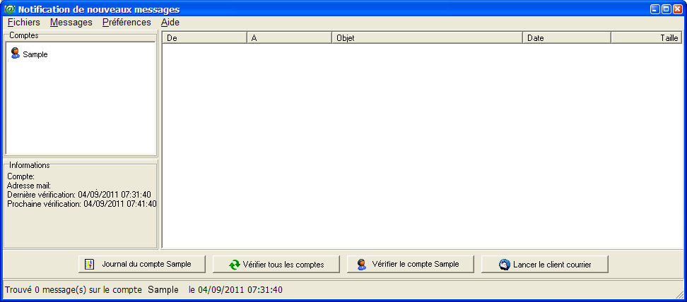
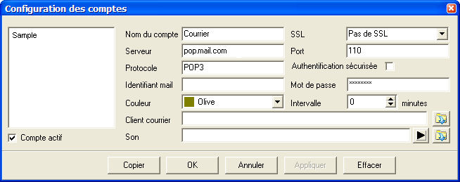
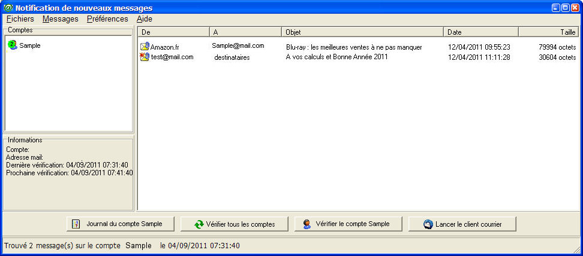
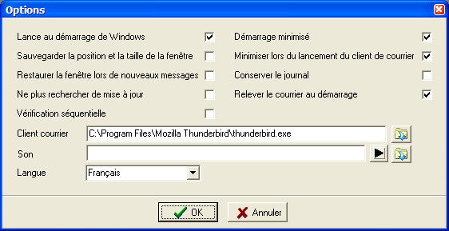
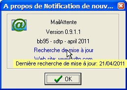

Notification de courrier dans des boites à lettre POP3
(MailAttente)
Installation
Exécuter le fichier InstallMailAttente.exe qui se trouve dans l'archive
téléchargée.
Utilisation
Cliquez sur l'icone MailAttente sur le Bureau (si vous avez demandé son
installation) ou sur Démarrer, Tous les programmes, MailAttente, MailAttente.
La fenêtre suivante apparaît à l'écran :

Lors du premier lancement du programme, un compte de courrier
factice est créé. Avant de pouvoir utiliser le programme, il est
nécessaire de lui indiquer
les paramètres de votre boîte de courrier.
NOTE
MailAttente est réduit dans la zone de notification lorsque vous
cliquez sur les éléments suivants : choix menu Fermer du menu système
et de son icone dans la barre des tâches, croix de fermeture en haut et
à droite de la fenêtre principale.
Pour arrêter le programme, utiliser le menu Fichier, Quitter de la
fenêtre principale, ou le menu Quitter de son icone dans la zone de
notification.
Lors de l'arrêt du programme, la liste des messages est sauvegardée pour être réaffichée lors du prochain lancement.
Configuration des comptes
MailAttente peut importer les comptes de courrier d'Outlook Express
(jusqu'à Windows XP), de Windows Mail (Windows Vista) et de Windows
Live Mail. Il peut également importer les fichiers IAF et
OEAccount. Pour ce faire, cliquez sur le menu Fichiers, Importer,
et choisissez l'importation appropriée. Si aucun compte existant n'est
trouvé, cliquez sur le menu Préférences, Comptes pour modifier le
compte factice.
La fenêtre de configuration des comptes s'affiche :

Si vous modifiez le compte factice créé au lancement du programme, vous
devez entrer les paramètres de boîte aux lettres qui vous ont été
fournis par votre fournisseur de service:
-
serveur
- port (110 par défaut)
- identifiant
- mot de passe
Si vous avez importé un compte existant, seul le mot de passe est à renseigner.
Sauf indication contraire de votre fournisseur de service, ne modifiez pas le SSL et l'authentification sécurisée.
Vous pouvez ensuite choisir la couleur d'affichage de ce compte (icone
de notification et liste des comptes) et l'intervalle de vérification
de la boîte aux lettres.
Tapez 0 si vous ne voulez pas de vérification périodique. Dans ce cas,
la vérification peut être faite manuellement à l'aide du bouton
approprié.
Le client de courrier par défaut peut s'afficher dans le chammp
correspondant. S'il ne vous convient pas, vous pouvez le modifier en
cliquant sur le bouton à droite de ce champ.
Un son peut être exécuté lors de l'arrivée de nouvceaux messages. Vous
pouvez parcourir votre disque pour le rechercher en cliquant sur le
bouton le plus à droite du champ correspondant.
Vous pouvez écouter le son sélectionné en cliquant sur le bouton adjacent au champ correspondant.
Cliquez sur Appliquer ou OK pour accepter les modifications. Si vous
avez choisi un intervalle de vérification non nul, la recherche démarre
immédiatement.
Sinon, cliquez sur le bouton correspondant de la fenêtre principale pour démarrer une recherche.
Si une erreur se produit, elle est identifiée dans la barre de statut
et dans le journal qui s'affiche pour chaque compte en bas et à gauche
de la fenêtre principale.
Lancez à nouveau le menu Préférences, Comptes et vérifiez que les paramètres ont été saisis correctement.
Lorsque le programme trouve du courrier sur une boîte aux lettres, la
liste des messages s'affiche dans la fenêtre principale du programme.

Les
nouvaux messages sont signalés par une astérisque rouge. Un trombone
indique que le courrier comporte une pièce jointe, une photo ou un
élément différent du texte.
Si vous sohaitez effacer un ou plusieurs messages directement sur le
serveur, sélectionnez ces messages et cliquez avec le bouton droit de
la souris.
Un menu d'effacement des messages sélectionnés est affiché. Vous pouvez
alors effacer immédiatement ces messages ou attendre la prochaine
vérification pour le faire.
Si vous n'effacez pas immédiatement les messages marqués pour
effacement, vous pouvez les restaurer en sélectionnant les messages
marqués et en cliquant avec le bouton droit de la souris. Vous pouvez alors restaurer les messages marqués pour effacement.
ATTENTION !!!
Les messages effacés sur le serveur ne sont pas récupérables.
Options du programme
Pour configurer les options du programme, cliquez sur le menu Préférences, Options. La fenêtre suivant s'affiche.

Cochez la case :
- Lancer au démarrage de Windows : Le programme est exécuté lors du
démarrage de Windows. Pour que le programme soit lancé minimisé (icone
dans la sone de notification), cochez également :
- Démarrage minimisé : Le programme est exécuté minimisé dans la sone de notification lors du démarrage de Windows.
- Sauvegarder la position et la taille de la fenêtre : Lors de
son démarrage le programme s'affiche à la position mémorisée lors de sa
dernière exécution, avec la même dimension de fenêtre.
- Minimiser
lors du lancement du programme de courrier : Le programme est minimisé
dans la sone de notification lors du lancement du programme de courrier.
- Restaurer la fenêtre lors de nouveaux messages : Lorsque le programme
est minimisé dans la sone de notification, sa fenêtre principale
s'affiche lors de l'arrivée d'un nouveau message.
- Conserver le journal : Par défaut, le journal des événements
antérieurs est supprimmé lors du lancement du programme. Cette option
permet de conserver le journal lors du lancement, les nouveaux
événements s'ajoutent aux événements antérieurs.
- Ne plus rechercher de mise à jour : Par défaut, le programme
recherche automatiquement une mise à jour tous les 7 jours. Cette option désactive la recherche automatique
- Relever le courrier au démarrage : Le programme recherche les
messages dès son démarrage. Si cete case n'est pas cochée, le programme
attend le tems correspondant à l'intervalle chsois lors de la
configureation du compte pour le relever.
- Vérification séquentielle : Lors de la vérification périodique, le
programme recherche par défaut les messages simultanément sur tous les
comptes. Cette option permet de forcer le programme à effectuer
la recherche compte par compte (comme pour la recherche
manuelle).
Le programme de courrier par défaut est sélectionné lors de la
première utilisation. S'il ne vous convient pas, vous pouvez le
modifier en cliquant sur le bouton à droite de ce champ.
Le programme choisi ici s'applique à tous les comptes pour lesquels un programme de courrier n'a pas été défini.
Un son peut être exécuté lors de l'arrivée de nouvceaux messages. Vous
pouvez parcourir votre disque pour le rechercher en cliquant sur le
bouton le plus à droite du champ correspondant.
Vous pouvez écouter le son sélectionné en cliquant sur le bouton
adjacent au champ correspondant. Le son choisi ici s'applique à tous
les comptes pour lesquels un son n'a pas été défini.
Mise à jour
Le programme recherche périodiquement l'existence de mises à jour, si
vous n'avez pas désactivé cette option dans les préférences.
Pour vérifier manuellement si une mise à jour est disponible, cliquez sur le menu Aide, Recherche de mise à jour.
La page du serveur de mise à jour vous indique la disponibilité
éventuelle d'une mise à jour ainsi que les liens de téléchargement de
cette dernière.
La dernière recherche de mise à jour est indiquée en plaçant le curseur
de la souris sur le champ "Recherche de mise à jour" de la boîte A
propos...

Ligne de commande
Le paramètre MINI en ligne de commande permet de lancer le programme en mod minimisé.
Résolution des problèmes et liste des messages d'erreur
Le résultat de la recherche de chaque compte s'affiche dans la
barre d'état lors de la sélection d'un compte. Si la recherche a
échoué, le message d'erreur s'affiche dans la barre d'état.
Erreur de connexion:
Le programme n'a pas pu se connecter au serveur. Vérifiez que la
machine est bien connectée à Internet et que l'adresse et le port du
serveur POP3 sont corrects.
Si la connexion à Internet est établie et que l'adresse du serveur est valide, Vérifiez avec votre client de courrier que le serveur est actuellement accessible. Si c'est le cas, vérifiez que le port du serveur n'est pas bloqué par un pare-feu ou intercepté par un logiciel antivirus ou antispam.
Erreur d'authentification: Le
nom d'utilisateur ou le mot de passe ne sont pas reconnus. Vérifiez
l'exactitude de ces coordonnées auprès du fournisseur de votre
boîte de courrier.
Abandon par dépassement de délai:
Le serveur a mis trop de temps à répondre. La connexion a été
abandonnée après deux minutes d'inactivité du serveur. Ressayez
ultérieurement.